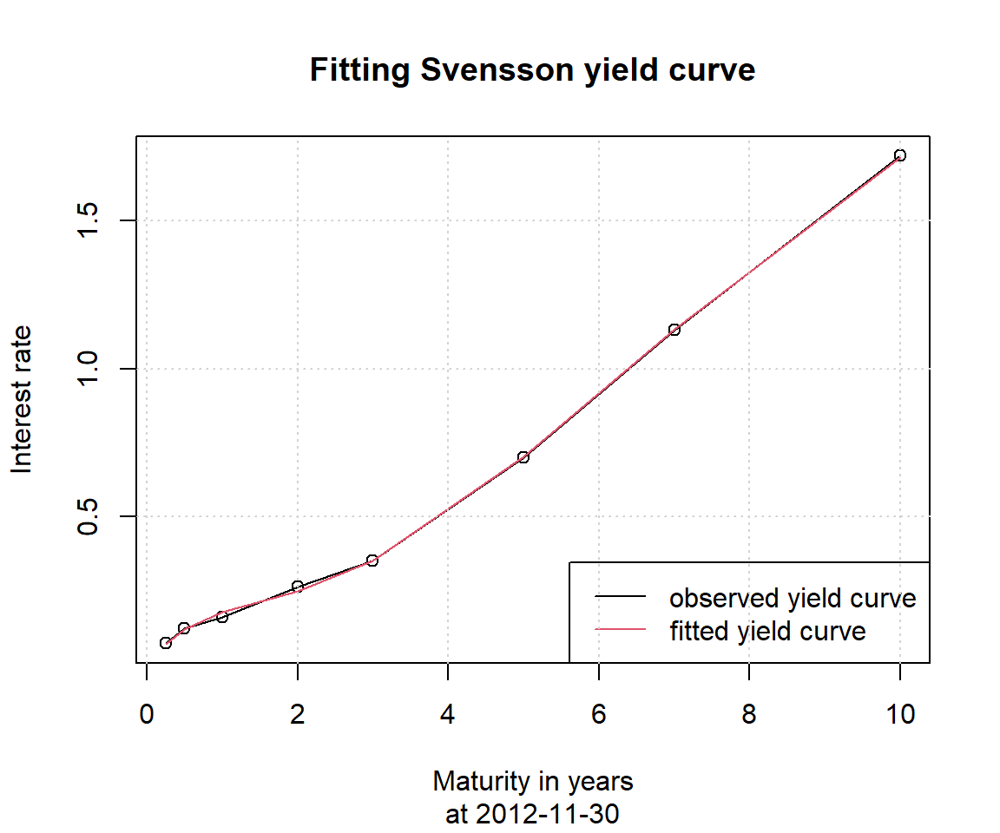

knitr::opts_chunk$set(echo = TRUE)
if (!require(YieldCurve)) install.packages('YieldCurve')
if (!require(xts)) install.packages('xts')YieldCurve
パッケージの概要
YieldCurveはパラメトリックなイールドカーブを生成することができるパッケージです。金利データをインプットすると、Nelson-Siegel、またはSvenssonのモデルに基づくパラメータを推定し、イールドカーブを生成します。また、このパッケージには、連邦準備銀行（FRB）と欧州中央銀行（ECB）の金利のデータセットも含まれています。
require(YieldCurve)
require(xts) # ※日本国債金利データを時系列データに変換するのに使用
Sys.setenv(TZ = "UTC") #タイムゾーンをUTCに設定（データセット使用時に環境によってはエラーとなるため）データの取得
YieldCurveには、連邦準備銀行（FRB）と欧州中央銀行（ECB）の金利の期間構造のデータセットが含まれています。以下ではFRBのデータを取得してイールドカーブをプロットします。このデータセットは、1981年12月末から2012年11月末までの範囲の様々な満期（3ヶ月、6ヶ月、1年、2年、3年、5年、7年、10年）による米国財務省証券定常満期（CMT）の月次の市場利回りです。プロットしてみると、1982年と2012年ではイールドカーブの形状が大きく異なっているのがわかります。
# データをロード
data(FedYieldCurve)
# 最初の3ヶ月分のデータを出力
first(FedYieldCurve,'3 month') R_3M R_6M R_1Y R_2Y R_3Y R_5Y R_7Y R_10Y
1981-12-31 12.92 13.90 14.32 14.57 14.64 14.65 14.67 14.59
1982-01-31 14.28 14.81 14.73 14.82 14.73 14.54 14.46 14.43
1982-02-28 13.31 13.83 13.95 14.19 14.13 13.98 13.93 13.86# 最後の3ヶ月分のデータを出力
last(FedYieldCurve,'3 month') R_3M R_6M R_1Y R_2Y R_3Y R_5Y R_7Y R_10Y
2012-09-30 0.10 0.15 0.18 0.28 0.37 0.71 1.15 1.75
2012-10-31 0.09 0.14 0.18 0.27 0.36 0.67 1.08 1.65
2012-11-30 0.07 0.12 0.16 0.26 0.35 0.70 1.13 1.72# 最初の3ヶ月および最後の3ヶ月のデータのイールドカーブをプロット
maturity <- c(3/12, 6/12, 1, 2, 3, 5, 7, 10)
par(mfrow=c(2,3)) # 2行3列で表示
for( i in c(1, 2, 3, 370, 371, 372) ){
plot(x = maturity, y = FedYieldCurve[i,], type="o",
xlab="Maturity in years", ylab="IR values")
title(main=paste("FedYieldCurve obeserved at",
time(FedYieldCurve[i], sep=" ")))
grid()
}ECBのデータセットも同様に取得可能です。こちらは満期が3ヶ月と6ヶ月、および1年から30年の日次データで、範囲は2006/12/28から2009/7/23です。
# データをロード
data(ECBYieldCurve)
# 最初の3営業日分のデータを出力
first(ECBYieldCurve,'3 day') X3M X6M X1Y X2Y X3Y X4Y X5Y X6Y X7Y
2006-12-28 3.4435 3.6073 3.7581 3.8223 3.8250 3.8263 3.8333 3.8452 3.8604
2007-01-01 3.4513 3.6110 3.7497 3.8006 3.8001 3.8014 3.8096 3.8230 3.8397
2007-01-02 3.4483 3.6117 3.7458 3.7912 3.7913 3.7945 3.8045 3.8193 3.8368
X8Y X9Y X10Y X11Y X12Y X13Y X14Y X15Y X16Y
2006-12-28 3.8772 3.8946 3.9118 3.9284 3.9440 3.9586 3.9721 3.9844 3.9958
2007-01-01 3.8578 3.8762 3.8942 3.9114 3.9274 3.9422 3.9558 3.9683 3.9797
2007-01-02 3.8553 3.8736 3.8913 3.9079 3.9232 3.9373 3.9501 3.9618 3.9723
X17Y X18Y X19Y X20Y X21Y X22Y X23Y X24Y X25Y
2006-12-28 4.0062 4.0157 4.0244 4.0324 4.0397 4.0465 4.0527 4.0584 4.0637
2007-01-01 3.9900 3.9995 4.0081 4.0160 4.0232 4.0298 4.0358 4.0414 4.0466
2007-01-02 3.9819 3.9906 3.9985 4.0057 4.0123 4.0183 4.0238 4.0289 4.0336
X26Y X27Y X28Y X29Y X30Y
2006-12-28 4.0685 4.0731 4.0773 4.0813 4.0850
2007-01-01 4.0514 4.0558 4.0600 4.0638 4.0674
2007-01-02 4.0379 4.0420 4.0457 4.0492 4.0524# 最後の3営業日分のデータを出力
last(ECBYieldCurve,'3 day') X3M X6M X1Y X2Y X3Y X4Y X5Y X6Y X7Y
2009-07-21 0.4440 0.4463 0.7419 1.4232 1.9602 2.3940 2.7578 3.0678 3.3334
2009-07-22 0.4433 0.4479 0.7430 1.4202 1.9548 2.3873 2.7504 3.0602 3.3259
2009-07-23 0.4621 0.4576 0.7667 1.4619 1.9983 2.4286 2.7884 3.0945 3.3564
X8Y X9Y X10Y X11Y X12Y X13Y X14Y X15Y X16Y
2009-07-21 3.5612 3.7561 3.9222 4.0628 4.1809 4.2791 4.3598 4.4249 4.4762
2009-07-22 3.5540 3.7493 3.9159 4.0572 4.1760 4.2750 4.3564 4.4222 4.4743
2009-07-23 3.5808 3.7725 3.9356 4.0736 4.1894 4.2855 4.3643 4.4278 4.4776
X17Y X18Y X19Y X20Y X21Y X22Y X23Y X24Y X25Y
2009-07-21 4.5153 4.5437 4.5627 4.5733 4.5767 4.5737 4.5651 4.5518 4.5342
2009-07-22 4.5142 4.5434 4.5631 4.5745 4.5785 4.5762 4.5683 4.5556 4.5387
2009-07-23 4.5155 4.5428 4.5608 4.5707 4.5734 4.5699 4.5609 4.5472 4.5294
X26Y X27Y X28Y X29Y X30Y
2009-07-21 4.5131 4.4889 4.4621 4.4331 4.4023
2009-07-22 4.5181 4.4945 4.4682 4.4397 4.4093
2009-07-23 4.5081 4.4838 4.4570 4.4280 4.3973Nelson-Siegelモデルによるパラメータの推定
Nelson.Siegel関数では、Nelson-Siegelモデルによるパラメータを推定できます。具体的には、金利データをインプットすると、以下の算式で表されるNelson-Siegelモデルのイールドカーブについて、各基準日のパラメータ\beta_0（水準）、\beta_1（傾き）、\beta_2（曲率）、\lambda（こぶの位置）を推定します。次のコードでは先ほど取得したFRBのデータから最初の3ヶ月分と最後の3ヶ月分のパラメータを推定しています。
y(m) = \beta_{0} + \beta_{1}\frac{1-\exp(-\lambda m)}{\lambda m} + \beta_{2}\left( \frac{1-\exp(-\lambda m)}{\lambda m} - \exp(-\lambda m) \right)
# Nelson-Siegel関数でパラメータを推定
NSParameters <- Nelson.Siegel(rate=c(first(FedYieldCurve,'3 month'),
last(FedYieldCurve,'3 month')), maturity=maturity)
print(NSParameters) beta_0 beta_1 beta_2 lambda
1981-12-31 14.345938 -1.76249751 3.650061 0.9999507
1982-01-31 14.146815 0.05426534 2.219142 0.9999507
1982-02-28 13.610646 -0.54316951 2.708078 0.9999507
2012-09-30 6.752246 -6.62479968 -6.609233 0.1839190
2012-10-31 6.292996 -6.17330023 -6.111852 0.1839190
2012-11-30 6.590762 -6.49626011 -6.364102 0.1839190Nelson-Siegelモデルにより推定したイールドカーブと観測値との比較
NSrates関数ではNelson-Siegelモデルによって生成した金利を出力することができます。先ほど推定したパラメータに基づいて1982年2月28日時点および2012年11月30日時点のイールドカーブを生成し、実際の観測値と比較してみます。
# 生成したイールドカーブと実際の観測値をプロットする関数を定義
YieldCurve_NS <- function(date){
row_index <- which(as.Date(time(FedYieldCurve)) == date)
# NSrates関数でイールドカーブを生成
y <- NSrates(Coeff=NSParameters[date,], maturity=maturity)
plot(maturity, FedYieldCurve[row_index,],
main="Fitting Nelson-Siegel yield curve",
sub=paste("at", date),
xlab="Maturity in years", ylab="Interest rate",
type="o")
lines(maturity, y, col=2)
legend("bottomright", legend=c("observed yield curve", "fitted yield curve"),
col=c(1, 2), lty=1)
grid()
}
# 上記で定義した関数を2種類の日付で実行
YieldCurve_NS(date="1982-02-28")YieldCurve_NS(date="2012-11-30")Svenssonモデルによるパラメータの推定
Svensson関数ではSvenssonモデルによるパラメータを推定できます。Svenssonモデルは、フォワードレートを次の算式で記述します。 y(m) = \beta_{0} + \beta_{1}\exp\left(-\frac{m}{\tau_1}\right) + \beta_{2}\frac{m}{\tau_1} \exp\left(-\frac{m}{\tau_1}\right) + \beta_{3}\frac{m}{\tau_2} \exp\left(-\frac{m}{\tau_2}\right) また、スポットレートはフォワードレートから導き出すことができ、次式で与えられます。
\begin{equation} \begin{split} y(m) &= \beta_{0} + \beta_{1}\frac{1-\exp\left(-\frac{m}{\tau_1}\right)}{\frac{m}{\tau_1}} \\ &+ \beta_{2}\left[ \frac{1-\exp\left(-\frac{m}{\tau_1}\right)}{\frac{m}{\tau_1}} -\exp\left( -\frac{m}{\tau_1} \right) \right] \\ &+ \beta_{3}\left[ \frac{1-\exp\left(-\frac{m}{\tau_2}\right)}{\frac{m}{\tau_2}} -\exp\left( -\frac{m}{\tau_2} \right) \right] \end{split} \end{equation}
金利データをインプットすると、Svenssonモデルのイールドカーブについて、各基準日のパラメータ\beta_{0}、\beta_{1}、\beta_{2}、\beta_{3}、\tau_1、\tau_2を推定します。次のコードでは、Nelson-Siegel関数と同様に、FRBのデータから最初の3ヶ月分と最後の3ヶ月分のパラメータを推定しています。
# Svensson関数でパラメータを推定
SParameters <- Svensson(rate=c(first(FedYieldCurve,'3 month'),
last(FedYieldCurve,'3 month')), maturity=maturity)
print(SParameters) beta_0 beta_1 beta_2 beta_3 tau1 tau2
1981-12-31 14.363225 -5.985221 4.2727279 1.228120 0.1394069 2.230556
1982-01-31 14.132359 -3.714214 5.8585278 1.632805 0.1394069 1.394090
1982-02-28 13.579827 -2.777746 2.9489977 1.826403 0.1394069 1.394090
2012-09-30 3.943150 -3.919280 2.3263474 -9.543698 1.2546800 2.230556
2012-10-31 4.701361 -4.643251 -0.3330681 -9.435904 1.2546800 3.067007
2012-11-30 3.873912 -3.879939 2.2458033 -9.327330 1.2546800 2.230556Svenssonモデルにより推定したイールドカーブと観測値との比較
Srates関数は、Svenssonモデルによって生成した金利を出力することができます。NSrates関数のときと同様に、Svensson関数で推定したパラメータに基づいて1982年2月28日時点および2012年11月30日時点のイールドカーブを作成し、実際の観測値と比較します。なお、Srates関数はNSrates関数と異なり、スポットレートとフォワードレート両方の出力が可能です。引数の”whichRate”にて”Spot”または”Forward”を指定します。
# 生成したイールドカーブと実際の観測値をプロットする関数を定義
YieldCurve_S <- function(date){
row_index <- which(as.Date(time(FedYieldCurve)) == date)
# Srates関数でイールドカーブを生成（"whichRate"にて"Spot"または"Forward"を指定）
y <- Srates(Coeff=SParameters[date,], maturity=maturity, whichRate = "Spot")
plot(maturity, FedYieldCurve[row_index,],
main="Fitting Svensson yield curve",
sub=paste("at", date),
xlab="Maturity in years", ylab="Interest rate",
type="o")
lines(maturity, y, col=2)
legend("bottomright", legend=c("observed yield curve", "fitted yield curve"),
col=c(1, 2), lty=1)
grid()
}
# 上記で定義した関数を2種類の日付で実行
YieldCurve_S(date="1982-02-28")YieldCurve_S(date="2012-11-30")
外部データを用いた場合
パッケージに含まれたデータセットだけでなく、外部データを用いることも可能です。財務省のホームページより当月の日本国債の流通利回りを取得し、Nelson-Siegelモデルで直近営業日の金利のイールドカーブをフィッティングしてみましょう。今回は70年満期までの補外も行っています。
なお、コード中に記載のURLより取得できるCSVファイルは日々更新されるため、コードを実行する日が異なれば異なる金利が出力される（再現性がない）ことに留意ください。
# 日本国債金利の取得
# 以下のURLにて当月の金利情報が取得可能
# PATH <- https://www.mof.go.jp/jgbs/reference/interest_rate/jgbcm.csv
PATH <- "../data/jgbcm202507.csv"
jgb <- read.csv(PATH, header=FALSE, skip=2)
maturity.jgb <- c(1:10, 15, 20, 25, 30, 40)
colnames(jgb) <- maturity.jgb
rownames(jgb) <- jgb[, 1]
jgb <- na.omit(jgb[, -1])
# 和暦のままだと下記のxts関数がエラーとなる
# 令和X年以外の金利を取得する場合は適宜コードを変更する
rownames(jgb) <- gsub("R7", "2025", rownames(jgb))
rownames(jgb) <- gsub("\\.", "-", rownames(jgb))
# xtsパッケージにより時系列データに変換
jgb <- xts(jgb, order.by = as.Date(rownames(jgb)))
jgb 2 3 4 5 6 7 8 9 10 15 20
2025-07-01 0.581 0.735 0.780 0.891 0.986 1.032 1.110 1.200 1.313 1.419 1.985
2025-07-02 0.582 0.741 0.785 0.899 0.992 1.041 1.120 1.211 1.328 1.434 1.994
2025-07-03 0.592 0.746 0.796 0.910 1.009 1.060 1.136 1.227 1.341 1.448 2.018
2025-07-04 0.583 0.736 0.786 0.900 0.992 1.046 1.124 1.216 1.333 1.444 2.018
2025-07-07 0.575 0.732 0.782 0.902 0.993 1.046 1.126 1.224 1.343 1.463 2.050
2025-07-08 0.576 0.733 0.786 0.906 1.009 1.063 1.144 1.245 1.373 1.492 2.096
2025-07-09 0.587 0.754 0.807 0.927 1.029 1.088 1.168 1.266 1.389 1.507 2.108
2025-07-10 0.587 0.760 0.811 0.922 1.025 1.084 1.163 1.261 1.386 1.498 2.115
2025-07-11 0.591 0.764 0.816 0.931 1.035 1.094 1.178 1.275 1.395 1.507 2.105
2025-07-14 0.614 0.781 0.842 0.959 1.074 1.143 1.235 1.337 1.458 1.574 2.189
2025-07-15 0.615 0.792 0.853 0.970 1.085 1.154 1.247 1.351 1.473 1.588 2.218
2025-07-16 0.616 0.793 0.853 0.971 1.085 1.154 1.242 1.346 1.463 1.575 2.188
2025-07-17 0.618 0.788 0.847 0.966 1.081 1.149 1.235 1.339 1.450 1.561 2.177
2025-07-18 0.608 0.772 0.829 0.940 1.046 1.117 1.205 1.308 1.418 1.528 2.135
2025-07-22 0.596 0.760 0.817 0.921 1.027 1.094 1.183 1.289 1.400 1.510 2.125
2025-07-23 0.654 0.838 0.897 1.016 1.125 1.192 1.281 1.383 1.492 1.596 2.198
2025-07-24 0.665 0.854 0.909 1.030 1.140 1.207 1.295 1.393 1.502 1.605 2.191
2025-07-25 0.684 0.863 0.921 1.044 1.155 1.217 1.304 1.399 1.506 1.605 2.180
2025-07-28 0.678 0.849 0.905 1.010 1.122 1.183 1.269 1.362 1.471 1.571 2.141
2025-07-29 0.669 0.835 0.895 1.002 1.108 1.175 1.261 1.354 1.463 1.564 2.152
2025-07-30 0.660 0.826 0.886 0.994 1.097 1.166 1.253 1.346 1.459 1.565 2.156
2025-07-31 0.662 0.826 0.886 0.994 1.097 1.163 1.249 1.345 1.457 1.559 2.150
25 30 40 <NA>
2025-07-01 2.345 2.613 2.789 3.082
2025-07-02 2.352 2.622 2.785 3.074
2025-07-03 2.383 2.668 2.844 3.130
2025-07-04 2.391 2.677 2.852 3.129
2025-07-07 2.440 2.745 2.932 3.218
2025-07-08 2.505 2.825 3.007 3.310
2025-07-09 2.511 2.823 3.003 3.297
2025-07-10 2.508 2.824 3.008 3.301
2025-07-11 2.503 2.806 2.992 3.278
2025-07-14 2.593 2.894 3.083 3.403
2025-07-15 2.610 2.912 3.087 3.398
2025-07-16 2.564 2.867 3.011 3.320
2025-07-17 2.564 2.869 3.029 3.317
2025-07-18 2.526 2.840 3.014 3.302
2025-07-22 2.531 2.847 3.022 3.319
2025-07-23 2.590 2.891 3.062 3.379
2025-07-24 2.574 2.865 3.034 3.338
2025-07-25 2.553 2.847 3.006 3.301
2025-07-28 2.515 2.812 2.975 3.267
2025-07-29 2.532 2.825 2.999 3.280
2025-07-30 2.541 2.843 3.019 3.300
2025-07-31 2.542 2.847 3.026 3.308# パラメータの推定
NSParameters.jgb <- Nelson.Siegel(rate=jgb, maturity=maturity.jgb)
print(NSParameters.jgb) beta_0 beta_1 beta_2 lambda
2025-07-01 4.042087 -3.428514 -3.320096 0.1793200
2025-07-02 3.972646 -3.343563 -3.345908 0.1887807
2025-07-03 4.106570 -3.484893 -3.344883 0.1793200
2025-07-04 4.070630 -3.436666 -3.493044 0.1887807
2025-07-07 4.202264 -3.567289 -3.682664 0.1887807
2025-07-08 4.327032 -3.692803 -3.807517 0.1887807
2025-07-09 4.296188 -3.653226 -3.702050 0.1887807
2025-07-10 4.308420 -3.658147 -3.748476 0.1887807
2025-07-11 4.263112 -3.617008 -3.634699 0.1887807
2025-07-14 4.452226 -3.822881 -3.551125 0.1793200
2025-07-15 4.389252 -3.741518 -3.595448 0.1887807
2025-07-16 4.273074 -3.632529 -3.414445 0.1887807
2025-07-17 4.291194 -3.644065 -3.486044 0.1887807
2025-07-18 4.287946 -3.637862 -3.604208 0.1887807
2025-07-22 4.327977 -3.679933 -3.730916 0.1887807
2025-07-23 4.384645 -3.706582 -3.394908 0.1793200
2025-07-24 4.314639 -3.630447 -3.256352 0.1793200
2025-07-25 4.257602 -3.558978 -3.172006 0.1793200
2025-07-28 4.237026 -3.536299 -3.267140 0.1793200
2025-07-29 4.220688 -3.508794 -3.439355 0.1887807
2025-07-30 4.259014 -3.554073 -3.508831 0.1887807
2025-07-31 4.329908 -3.640968 -3.445091 0.1793200# Nelson-Siegelモデルにより推定したイールドカーブと観測値との比較
date <- index(jgb)[nrow(jgb)] # 最終行=直近営業日をdateとする
y <- NSrates(Coeff=NSParameters.jgb[date,],
maturity=c(maturity.jgb,50,60,70)) # 50,60,70年を補外
plot(x=maturity.jgb,
y=jgb[date,],
main="JGB yield curve",
sub=paste("at", date),
xlab="Maturity in years",
ylab="Interest rate",
xlim=c(0, 70),
ylim=range(y),
type="o")
lines(c(maturity.jgb,50,60,70), y, col=2)
legend("bottomright",
legend=c("observed yield curve", "fitted yield curve"),
col=c(1, 2), lty=1)
grid()